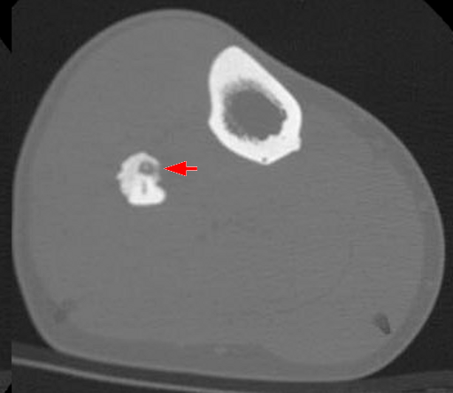

Ficha del catálogo
Osteoma osteoide
- Sistema
- Óseo
- Modalidad
- TC
- Región
- Fémur y tibia proximales
- Dificultad
- Intermedio
Tumor óseo benigno de pequeño tamaño que se presenta en adolescentes y adultos jóvenes con dolor nocturno característico que responde de forma llamativa a los antiinflamatorios. Está formado por un nido vascularizado rodeado de hueso esclerótico reactivo. El tratamiento actual suele ser la ablación percutánea guiada por imagen.
Técnica
Tomografía con cortes finos sobre la zona dolorosa, que es la técnica de elección para localizar el nido con precisión milimétrica.
Qué observar
- Nido lucente redondeado, habitualmente menor de un centímetro y medio
- Calcificación central dentro del nido en muchos casos
- Esclerosis reactiva densa y engrosamiento cortical alrededor
- Localización cortical diafisaria, con frecuencia en fémur proximal o tibia
- Edema medular y sinovitis reactiva en resonancia cuando es intraarticular
- Escoliosis dolorosa de convexidad contraria si asienta en elementos posteriores vertebrales
Hallazgos
Nido cortical lucente con centro calcificado rodeado de esclerosis reactiva y engrosamiento del hueso adyacente.
Perlas
El dolor nocturno que cede con antiinflamatorios es tan característico que orienta el diagnóstico antes de la imagen. En la resonancia el edema reactivo puede ser tan llamativo que oculte el nido, por eso la tomografía es superior para localizarlo.
Diagnóstico diferencial
- Absceso de Brodie
- Cavidad metafisaria con trayecto serpiginoso y contexto infeccioso.
- Fractura por estrés
- Línea de fractura perpendicular a la cortical y antecedente de sobrecarga.
- Osteoblastoma
- Lesión de mayor tamaño, más frecuente en elementos posteriores vertebrales.
Simuladores
- Canal nutricio óseo
- Osteomielitis crónica esclerosante
- Callo cortical antiguo
Por modalidad
- TC
- Técnica de elección para identificar y tratar el nido
- RM
- Muestra edema muy extenso que puede confundir
- RX
- Puede ser normal o mostrar solo la esclerosis
Protocolo
Tomografía con cortes submilimétricos y reconstrucciones multiplanares centradas en la zona dolorosa, con planificación para ablación si procede.
Clasificación
Errores frecuentes
- Interpretar el edema medular extenso de la resonancia como tumor agresivo o infección
- No dirigir el estudio a la zona exacta del dolor y omitir un nido pequeño
- Confundirlo con osteomielitis crónica y prolongar antibióticos sin efecto

osteoma osteoide nido dolor nocturno esclerosis ablacion tumor benigno